Comparison 01
Roads & Safety
Should the look of a road matter more than the safety of the people using it?
We can value rural character and still question the restrictions that shape our roads.
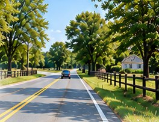
Community Plan
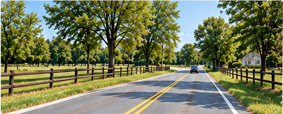
Road design
Why limit the options before assessing the need?
The Community Plan prioritizes rural, two-lane road character and limits certain changes.
Gunn Highway
Should a road restriction be beyond question?
Gunn Highway is subject to expansion restrictions.
Lighting
Does someone have to get hurt first?
The Community Plan discourages street lighting and allows it when public safety is at risk.
Walking and crossings
Why should rural character limit the discussion?
The Community Plan permits specified improvements and supports trails while retaining rural road character.
County Framework
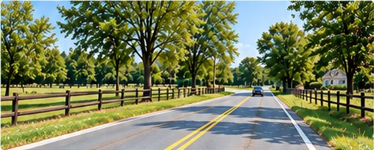
Road design
Assess safety, mobility and local conditions.
Countywide policies address road-user needs and context-sensitive design.
Gunn Highway
Reassess the restrictions.
County policy calls for reevaluating constrained roads before each long-range transportation plan update.
Lighting
Lighting can respect its surroundings.
County policies address context-sensitive lighting and intersection visibility.
Walking and crossings
Make people’s needs central to the assessment.
County policies address crossing visibility, walking, cycling and safe routes to schools.
Comparison 02
Water & Wastewater
From Infrastructure Limits to More Response Tools
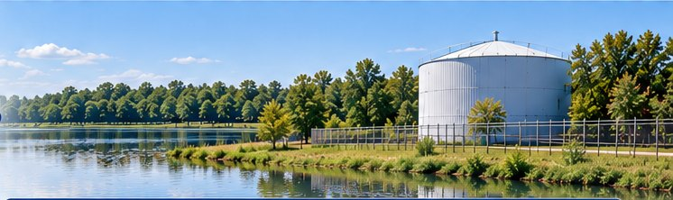
Community Plan
Emphasizes water protection but has more limited infrastructure response options.
Makes protection of water resources a priority, but does not contain the same requirement to consider soil conditions and permeability.
Does not contain a comparable policy for aging or failing septic systems.
Does not create a specific septic/wastewater response for wellhead or wellfield protection areas.
Calls for stormwater management plans, but does not set the same technical standard for cumulative flooding and water quality.
County Framework
Provides a broader planning framework and more specific response tools.
Requires development decisions to consider physical land and soil conditions, including permeability.
Provides a pathway to respond when septic creates a documented environmental problem.
Allows centralized service in certain Wellhead Resource Protection Areas and Tampa Bay Water Wellfield Mitigation Areas when conditions are met.
Requires stormwater technical standards to address cumulative impacts on flooding and water quality.
Keystone–Odessa limit
One Water Policy 4.3.7 excludes properties within the Keystone–Odessa Community Plan boundary from the wellhead/wellfield pathway described above.
Comparison 03
Growth & Housing
Two Ways of Managing Growth and Housing
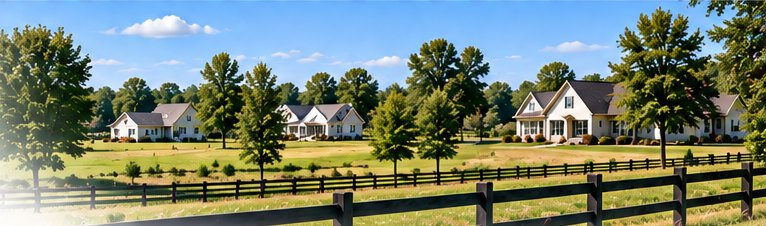
Community Plan
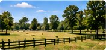
Uses approximately one dwelling unit per five acres in the relevant areas.
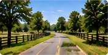
Favors a low-density, scattered residential pattern.
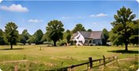
Its residential provisions do not directly address housing affordability.
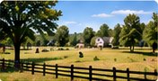
The residential policies focus strongly on maintaining the area’s rural development pattern.
County Framework
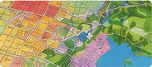
Uses mapped land-use categories that establish maximum densities and intensities.
Rural density limits still apply, including the general one dwelling per five gross acres policy, with specified exceptions.
Has housing goals and policies related to housing choice and affordability.
Supports tools including infill, small lots, accessory homes, and different housing types, with adequate infrastructure.
If the Community Plan
is removed, what remains?
Keystone–Odessa will still be planned and managed.
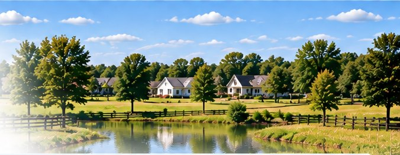
Remove
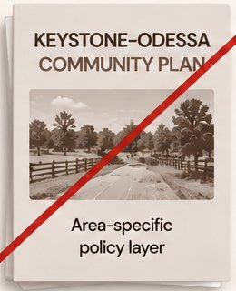
Remains
- Land Development Code
- Future Land Use Policies
- Mobility & Safety Policies
- Water & Environmental Policies
- Zoning & Development Standards
- Applicable Health / Engineering / Environmental Standards
RETIRE THE EXTRA PLAN. KEEP THE PROTECTIONS. Ask the County to retire the separate Community Plan, reconsider related restrictions and retain enforceable safeguards through the amendment process.
Source: Livable Communities Element. Livable Communities compilation dated June 26, 2026. Effective dates: p. 3. County framework relationship: pp. 4–5. Keystone–Odessa: pp. 17–27. Transportation and lighting: p. 24. Read the Community Plan